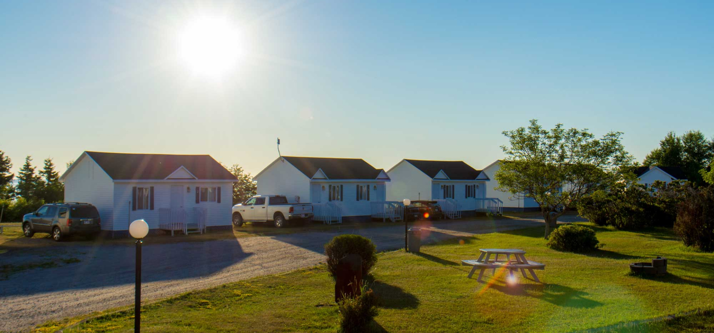

{% include "_partials/_header.html" %}
    <section class="content">
        <section class="hero">
            
                    <div class="swiper-slide">
                        
                    </div>
            <div class="hero_info" >
                <h3>Baie Ste-Catherine</h3>
                <h1>Capitale de la zénitude et des baleines</h1>
                <div class="button">
                    <a href="">
                        Découvre les activités
                        <svg class="icon icon--stroke button_icon">
                            <use xlink:href="#icon-fleche"></use>
                        </svg>
                    </a>
                </div>
            </div>
        </section>
        <section class="propos">
            <div>
                <h2>À propos</h2>
            </div>
            <div>
                <div class="presentation"></div>
                <div class="img"></div>
                <div class="loisir"></div>
                <div class="expertise"></div>
            </div>
        </section>
        <section class="projet">

        </section>
        <section class="contact">

        </section>
    </section>


{% include "_partials/_footer.html" %}
